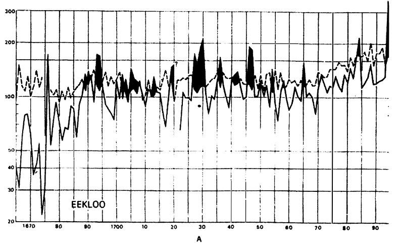
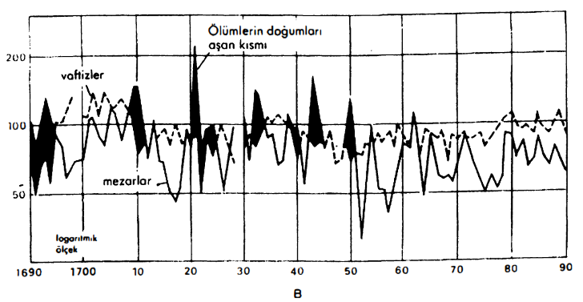
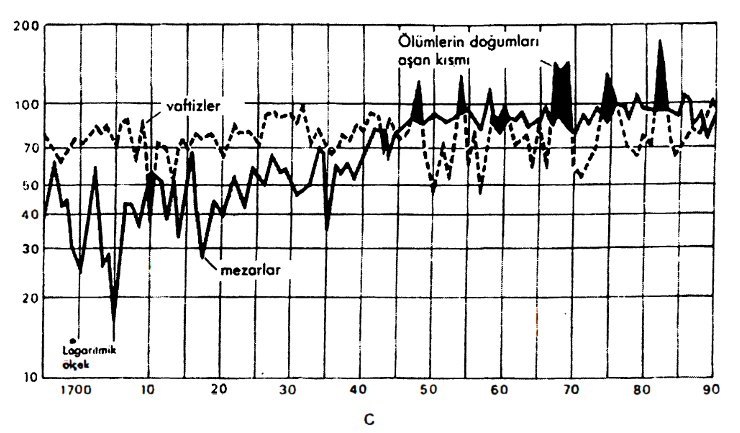
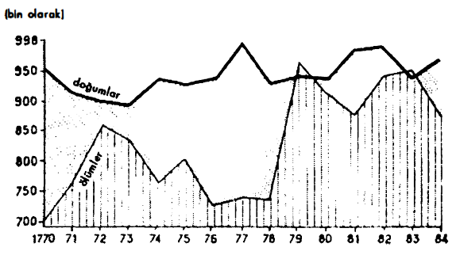
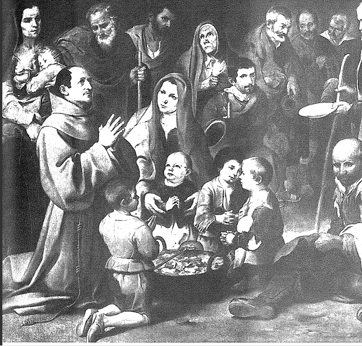
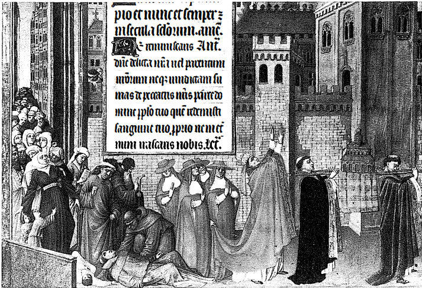

Çin'de olduğu kadar, Avrupa'da da XVIII. yüzyılla birlikte kırılan şey, bir zorlamalar, engeller, o zamana kadar ölçü olan sayısal oyunların oran bütünü olan eski bir biyolojik rejimdir.
Ölümler ile doğumların iki hareketi arasındaki denge nihayetsiz bir şekilde kurulmaktadır. Bu iki katsayı (doğum ve ölüm) birbirlerine yakındır: %40. Hayatın getirdiğini ölüm geri almaktadır. Bugün Rennes kentinin banliyösü haline gelmiş olan küçük Chapelle-Fougerets bucağında, 1609'da kilise sicilledir göre 50 vaftiz gerçekleşmiştir, yani bin kişi başına 40 doğum sayarsak, demek ki doğum sayısını yirmi beşle çarparak bu büyük köyün nüfusunun 1250 kişi olduğunu ileri sürebiliriz. İngiliz iktisatçı William Petty Politik Aritmetik adlı kitabında (1690), nüfusu elde etmek üzere, ölüm sayısını 30'la çarpmıştır (bunun anlamı, ölümü olduğundan biraz hafifçe değerlendirmektir).
Kısa dönemde aktif ve pasif birlikte ilerlemektedirler; eğer rakiplerden biri öne geçerse, diğeri tepki göstermektedir. Söylendiğine göre, veba 1451'de Kolonya'dan 21.000 kişiyi götürmüştür, izleyen yıllarda kentte 4.000 düğün yapılmıştır;129 her şeyin öyle olduğunu düşünmeye yönelttiği gibi, bu rakamlar abartılmış olsalar bile, telâfi aşikârdır. Eski bir Brandenburg ucu olan küçük Salzewebedel yerleşim yerinde 1581'de 790 kişi ölmüştür, yani normal zamandakinden on kat fazla. Evlilik sayısı 30'dan 10'a düşmüştür, ama ertesi yıl, nüfusun azalmış olmasına rağmen 30 düğün yapılmış ve bunların arkasından da çok sayıda telâfi edici doğum gelmiştir.130 Verona'da 1637'de, söylendiğine göre nüfusun yarısını götürmüş olan bir veba salgınının arkasından (fakat vakanüvisler bilinçli bir şekilde abartmaktadırlar), hemen hepsi de Fransız olan ve felâketten oldukça kalabalık olarak kurtulan garnizondaki askerler, dullarla evlenmişler ve hayat eski haline dönmeye başlamıştır. Otuz Yıl Savaşının yıkıntılarından derinlemesine etkilenen tüm Almanya, belâdan çıkarken bir nüfus artışına tanık olmuştur. Bu, savaşın dehşetleri tarafından yarı yarıya veya çeyreği oranında yıkılmış olan bir ülkenin lehine rol oynayan telâfi edici olgudur. 1648'den kısa bir süre sonra, Avrupa nüfusunun durağanlaştığı veya gerilediği bir dönemde, Almanya'yı ziyaret eden şu İtalyan seyyah şunları işaret etmekteydi: “silah taşıyacak durumda çok az adam olmasına karşılık, anormal fazlalıkta çocuk var”



ESKİ NÜFUS: VAFTİZLER VE MEZARLAR
Üç örnek: A. Bir Flaman kenti
B. Bir Aşağı Provence kenti
C. Bir Beauvaisis kenti
Diğer yüzlercesinin arasında, bu örnekler ölüm ile doğum hadleri arasındaki oranı gösteriyorlar. Siyah çıkıntılar ölümün üste çıktığı dönemlere tekabül etmektedir. Ölümler XVIII. yüzyılla birlikte azalmıştır; Eyragues'daki gibi istisnalar (grafik B) ayrık. Ayrıca (grafik 9), Fransa'da 1779 ve 1783'te ölüm hadlerindeki artışa bakınız.

DEVRİM ÖNCESİNDE FRANSIZ NÜFUS HAREKETİ
(Kaynak: M. Reinhard et A. Armengaud, Histoire generale de la population mondiale.)
Eğer denge çabuk geri gelmezse, yetkililer müdahale etmektedirler: çok büyük kıskançlıkla kapalı tutulan Venedik'te, 30 Ekim 1348 tarihli kararname, Kara Veba'nın ertesinde özgürlükçü bir şekilde, kente yerleşmek üzere ailesi ve mallarıyla bir yıl içinde gelecek herkese tam yurttaşlık hakkı (de intus et de extra) tanımaktaydı. Zaten genel kurul olarak, kentler bu dış destekler sayesinde yaşayabilmektedirler. Ama olağan durumda bu katkı kendiliğinden örgütlenmektedir.
Demek ki kısa dönemde yükselişler ve düşüşler, birbirlerine alternatif oluşturmakta, ister Batı'da Venedik'te, isterse Beauvais'de çizilmiş olsunlar, ölümler ve doğumlara ilişkin testere ağızlı (XVIII. yüzyıla kadar) çifte eğrinin monoton bir şekilde gösterdiği üzere, birbirlerini telâfi etmektedirler. Her zaman tehlikede olan küçük yaşlardaki çocuklar ve kaynaklarının yetersizliğinin tehdidi altında tuttuğu herkesle, gerektiğinde yok etmek üzere, salgınlar meşgul olacaktır. Fakirler her zaman, salgınların ilk ulaştıklarıdır. Bu yüzyıllar, çok sayıda “toplumsal katliam”ın damgasını yemiştir. Senlis yakınındaki Crepy'de, 1483'te “bu kentin üçte birlik kısmı dilencidir ve bunların yaşlıları her gün gübre yığınları üzerinde ölmektedirler.”
Ancak XVIII. yüzyılla birlikte hayat ölümün üstüne çıkacak, artık rakibini düzenli bir şekilde geride bırakacaktır. Fakat saldırgan geri dönüşler mümkün olmaya devam etmektedir, örneğin Fransa'da 1772-1773'te veya 1779-1783 döneminin derinliklerinden fışkıran şu bunalım (Grafik 4) esnasında böyle olmuştur. Bu canlı tehlike çanları, gecikmiş ve besin ihtiyaçları ile üretim arasındaki her zaman tehlikeli bir dengenin insafına terk edilmiş olarak, tartışmalı bir konumda olduğu açığa çıkan bir düzelmenin narinliğini işaret etmektedirler.
Yüzyıllar boyunca kıtlık öylesine bir inatla geri gelmiştir ki, insanların biyolojik düzenlerinin içine katılmış, gündelik hayatın bir yapısı olmuştur. Pahalılık ve kıtlık fiili olarak süreklidirler, hatta ayrıcalıklı sayılan Avrupa'da bile alışılmış şeylerdir. Çok iyi beslenen birkaç zengin, kuralda herhangi bir değişiklik yapamamaktadır. Zaten nasıl başka türlü olabilirdi ki? Tahıl verimleri yetersizdir. İki, kötü hasadın arkasından felâketler gelmektedir. Batı dünyasında, belki de iklimin sayesinde, bu felâketler çoğu zaman hafif atlatılmaktadır. Tarımsal tekniklerin erkenden geliştiği, set inşası ve hem sulama hem de taşımacılıkta kullanılan kanal ağının oluşturulduğu, sonra da güney pirinçliklerinin inceden inceye örgütlendiği ve çifte ürün alındığı Çin'de de, aynı şekilde uzun süre belli bir denge kurulmuş ve bu denge XVIII. yüzyılın büyük nüfus artışının ötesine kadar bile sürmüştür. Ama iklimin sert ve belirsiz olduğu Moskof devletinde, ne de sellerin ve kuraklıkların mahşeri afetler haline geldiği Hind'de durum böyledir.
Ancak mucize ürünler (ileride tekrar göreceğimiz mısır, patates) Avrupa'da çok geç yerleşmişler ve modern entansif tarım yöntemleri kendilerini yavaş kabul ettirebilmişlerdir. Bu ve başka nedenlerden ötürü kıtlık kıtayı ziyaret edip, ortalığa felâket saçmaktan, boşluklar yaratmaktan geri kalmamıştır. Yüzyıl ortasındaki felâketlerin habercisi olan (Kara Veba'nın), 1309'dan 1318'e kadar birbirlerini izleyen kıtlıkların manzarasından daha çarpıcı bir şey olamaz: Kuzey, Orta ve Doğu Almanya'da başlayan bu kıtlıklar, tüm Avrupa'ya yayılmıştır -İngiltere, Hollanda, Fransa, Güney Almanya, Renanya- ve Livonya kıyılarına kadar (bugün Letonya ile Litvanya arasında) uzanmışlardır.
Maddi bilançoların hepsi de aşırı ağırdır. Eğer gerçekten öyleyse, ayrıcalıklı ülke olan Fransa X. yüzyılda 10, XI. yüzyılda 26, XII. yüzyılda 2, XIV. yüzyılda 4, XV. yüzyılda 7, XVI. yüzyılda 13, XVII. yüzyılda 11, XVIII. yüzyılda 160 genel kıtlıkla karşı karşıya kalmıştır. XVIII. yüzyılda yapılmış olan bu döküm, tabii ki her türlü çekinceyle birlikte verilmiştir: yalnızca iyimser olma tehlikesini taşımaktadır, çünkü bu genel felâketlerle her zaman çakışmayan, yüzlerce ve yüzlerce yerel kıtlığı dışarıda bırakmaktadır; örneğin Maine'de 1739, 1752, 1770, 1785'te böyle olmuştur; örneğin güney-batıda 1628, 1631, 1662, 1694, 1698, 1709, 1713'te böyle olmuştur.
Aynı şey Avrupa'nın herhangi bir ülkesi için de söylenebilir. Almanya'da kıtlık kentleri ve düz bölgeleri inatla ziyaret etmektedir. XVIII. ve XIX. yüzyılın rahatlıkları ve kolaylıkları geldiğinde dahi, felâketler birbirlerini izlemişlerdir: 1730'da Silezya'da kıtlık, 1771-1772'de Saksonya ve Güney Almanya'da aynı durum; 1816-1817'de Bavyera'da ve onun asıl sınırlarının dışında açlık: 5 Ağustos 1817'de Ulm kenti, yeni hasatla birlikte hayatın olağana dönüşünü şenliklerle kutlamıştır.
Başka bir istatistik: pek de fakir olmayan bir bölgede yer alan Floransa, 1371- 1791 arasında yalnızca 16 çok iyi hasada karşılık, 111 kıtlık yılına tanık olmuştur. Ama Toskana'nın tepelik olduğu; bağ ve zeytin tarımına tahsis edilmiş olduğu ve daha XIII. yüzyıldan önce bile, tüccarların sayesinde, o olmazsa yaşamasının mümkün olamayacağı Sicilya buğdayına güvendiği de bir gerçektir.
Zaten şikâyet etmeye alışmış olan kentlerin, kaderin bu darbelerine maruz kalan yegâne unsurlar olduklarına hemen inanmayalım. Kentlerin depoları, ihtiyaçları, “buğday daireleri”, dıştan yaptıkları mübayaaları, koskoca bir tedbirli karınca siyasetleri vardır. Paradoksal gözükmesine karşılık, kırlar bazen onlardan daha fazla acı çekmektedirler. Tüccarlara, senyörlere, kentlere bağımlı olarak yaşayan köylü, bu durumda hiçbir ihtiyata sahip değildir. Kıtlık durumunda, onun için kente göç etmekten, orada olabildiğince yığılmaktan, sokaklarda dilenmekten, tıpkı Venedik veya Amiens'de XVI. yüzyılda bile olduğu gibi, orada ölmekten başka bir çözümü yoktur.
Kentler bir süre sonra, yalnızca yakın çevrelerinin ihtiyaç içindeki insanlarının olayı olmayıp, aynı zamanda bazen çok uzaklardan gelen gerçek fakir ordularını harekete geçiren bu istilalara karşı kendilerini korumak zorunda kalmışlardır. Troyes kenti 1573'te kırsal alanında ve kendi sokaklarında, paçavralar içinde, bit ve pireyle kaplı, aç estrangers, yabancıların zuhur ettiğini görmüştür. Bunlara buralarda ancak 24 saat ikamet izni verilmiştir. Fakat burjuvalar kısa bir süre sonra, bizzat kentteki ve yakınlardaki kırsal alanlardaki sefiller arasında bir halk ayaklanması tehlikesinden kaygılanmışlar, “adı geçen Troyes kentinin zenginleri ve yöneticileri bu durumdan kurtulmak için toplantı yapmışlardır.” Bu toplantının kararı, bunları kent dışına atmak yönünde olmuştur. “Bunu yapabilmek için, oldukça bol miktarda ekmek pişirtmek bunları dağıtmak üzere fakirleri kapılardan birinin önüne toplamak gerekecektir, onlara sır vermeden, her birine ekmeğini ve bir miktar parayı dağıtırken, bunlar bu kapıdan dışarı çıkartılacaklardır, sonra en sonuncusu da çıkınca, kapı kapatılacak ve surların üstünden onlara, hayatlarını kazanmak üzere Allah'a başka bir yerde gitmeleri ve Troyes'a gelecek hasattan önce dönmemeleri söylenecektir. Yapılan iş de bu olmuştur. Dağıtımdan sonra Troyes kentinden kovulan fakirler iyice korkuya kapılmışlardır...”
Bu burjuva vahşeti XVI. yüzyılın sonuyla birlikte, ondan da fazlası, XVII. yüzyılda ölçüsüz bir şekilde ağırlaşacaktır. Sorun: fakirleri zarar veremez duruma getirmek. Paris'te ezelden beri hasta ve sakatlar hastanelere sevk edilmekte, sağlamlar ise, ikişer ikişer zincire vurulmuş olarak, ağır ve iğrenç bir iş olan, kentin çukurlarının temizlenmesine yollanmaktadırlar. İngiltere'de Kraliçe Elizabeth'in saltanatının sonundan itibaren poor laws ortaya çıkmaktadır, bunlar fiili olarak fakirlere karşı yasalardır. Yavaş yavaş tüm Batı aleminde fakirler ve istenmeyenler için evler çoğalmakta, enterne edilen kişi burada zorunlu çalışmaya mahkûm edilmektedir: workhouses' da olduğu gibi, zuchthaüser veya 1656'da Paris'te kurulan ve yönetimi altında Paris Büyük Hastanesi'nin de bulunduğu umaisons de force ”, güç evleri böyledirler. Fakirlerin, delilerin, suçluların, ebeveynleri tarafından böylece gözetim altına konulan aile kızlarının bu “büyük kapatılmadı, XVII. yüzyılın mantıklı, aynı zamanda mantığı içinde sarsılmaz toplumun psikolojik veçhelerinden biridir. Fakat belki de bu, bu zor yüzyılda sefaletin artışı karşısında âdeta kaçınılmaz bir tepkidir. Belirleyici bir olgu olarak, 1656'da Dijon'da kent yetkilileri, kent yurttaşlarına fakirlere özel olarak şefkat göstermelerini ve onları barındırmalarını yasaklamaya kadar varmıştır. “XVI. yüzyılda yabancı dilenci dışarı atılmadan önce tedavi edilmekte ve doyurulmaktadır XVII. yüzyılın başında traş edilmektedir. Daha sonra kamçılanmakta ve yüzyılın sonunda, baskının son sözü olarak forsa haline getirilmektedir.”
Bunlar Avrupa manzaralarıdır. Asya'da, Çin'de, Hindistan'da daha da beteri vardır: kıtlıklar burada dünyanın sonu gelmiş gibi bir kılığa bürünmektedirler. Çin'de her şey güney eyaletlerinin pirincine; Hindistan'da her şey Bengal'in tanrının lütfu gibi olan pirincine, kuzey eyaletlerinin buğday ve darısına bağımlıdır, ama muazzam mesafelerin aşılması gerekmektedir. Her darbe geniş yansımalara yol açmaktadır. Dekkan'a sert bir darbe indiren 1472 kıtlığı, felâketten kurtulanların Gucerat Malva'ya geniş ölçekte göç etmelerine yol açmıştır. 1555 ve 1596'da tüm Kuzeybatı Hindistan'a yayılan şiddetli bir kıtlık, çağın kronikçilerine göre, yamyamlık sahnelerine yol açmıştır.
1630-163l'de Hindistan'ı pençesine alan, hemen hemen genel olan kıtlık ile aynı şeydir. Hollandalı bir seyyah ona dair korkunç bir tasvir bırakmıştır: “İnsanlar kent veya köylerini terk ettikten sonra, çaresiz bir şekilde şurada veya burada aylak aylak gezmektedirler. Durumları hemen anlaşılmaktadır: derinlemesine çukurlaşmış gözler, köpüklerle kaplı morarmış dudaklar, kemiklerin dışarı fırladığı kuru deriler, boş bir çuval gibi sarkmış karınlar; bazıları açlıktan ağlamakta ve ulumakta; diğerleri de yerde can çekişerek uzanmış durumdadır.” Bunlara bildik dramlar eklenmektedir: karı ve çocukların terk edilmesi, çocukların akrabaları tarafından satılması veya hayatta kalabilmek için insanların kendilerini satmaları, toplu intiharlar... Bu durumda açlıktan kırılanların ve can çekişenlerin karınlarını deşmekte “ve iç organlarını yemektedirler.” Gene tüccarımız “yüzlerce ve yüzlerce bin kişi ölüyordu, öylesine ki, ülkenin tamamı mezarsız kalan cesetlerle kaplanmaktaydı; bunlardan öyle bir koku yükselmekteydi ki, hava bununla dolmuş ve zehirlenmişti... Bir köyde, insan eti pazarda satılmaktaydı” demektedir.
Bölgelerin böylesine kesinlemeler sunmadıkları zamanlarda bile, bir ayrıntı dehşeti tahmin etmeye yetmektedir. 1670'te Hind Mugal hanı Evrengzeb'e saygılarını sunmaya gelmiş olan bir İran elçisi, ülkesine -zaten sonradan elinden alınacak “kıtlık yüzünden adeta bedavaya sahip olduğu sayısız köleyle” dönmüştür.
Tekrar ayrıcalıklı Avrupa'ya dönülecek olursa, buraya sertleşmiş, teselli olmuş veya kaderine razı olmuş bir şekilde geri dönülecektir; tıpkı gecenin ucuna yapılan bir yolculuktan dönüldüğü gibi. Böylesine dehşetlere, Avrupa'da gerçekte ancak, Batı Orta Çağının karanlık ilk yüzyılları esnasında veya çok sayıda gecikmenin gözle görüldüğü doğu sınırlarında tanık olunmaktadır. Bir tarihçi “eğer kurban ettiklerine oranla tarihin felaketleri yargılanılmak istenirse, Finlandiya'daki 1696-1697 kıtlığı Avrupa tarihinin en dehşet verici olayı olarak kabul edilmelidir” demektedir: bu kıtlıkta nüfusun çeyreği veya üçte biri ölmüştür. Bu Doğu Avrupa'nın kötü tarafıdır. Kıtlık burada “açlık besinleri” denilen otlara veya yabani meyvalara, eskiden yetiştirilmiş olup, şimdi zararlı tarla, bahçe, çayır otlarının arasında veya orman kıyılarında bulunan bitkilere umutsuzca başvurulmasına rağmen, XVIII. yüzyıldan sonra da uzun bir süre hüküm sürmüştür.
Ancak bu durum bazen Batı Avrupa'da da ve özellikle XVII. yüzyılda olmak üzere, yeniden ortaya çıkabilmektedir, yani “küçük buzul çağı”yla birlikte. Bir tanığın söylediğine göre, 1662'de Blesois bölgesinde “beş yüzyıldan beri böylesine bir sefalet görülmemiştir.” Fakirler burada “morina suyuna batırılmış tahıl kabuğu ile lahananın koçanından meydana gelen bir rejim yapmaktadırlar.” Aynı yıl Burgonya mebusları, krala sundukları kabul mektubunda “kıtlık bu yıl eyaletimizde on binden fazla aileyi bitirdi veya öldürdü ve iyi kemlerinki bile dahil, halkının üçte birini ot yemek zorunda bıraktı” diye bildirmektedirler. Bir kronik yazarı şunu ilâve etmektedir: “bu eyalette bazıları insan eti yemekteydiler.” Bundan on yıl önce, 1652'de bir başka kronikçi, köy papazı Mecheret, “Lorraine ve çevredeki komşu bölgelerin halkı o kadar uç noktaya geldiler ki, çayırlarda tıpkı hayvan gibi otluyorlar, özellikle Bassigny'deki Pouillv ve Parnot köylerinin halkı... ve bu insanlar iskelet gibi kara ve sıska hale geldiler” diye bildirmektedir. Bir Burgonyalı 1693'te, “tahıl tüm krallıkta öylesine pahalıydı ki, açlıktan ölünüyordu” diye kaydetmektedir; 1694 Meulan yakınlarında hasat buğdayın olgunlaşmasından önce yapılmıştır, “insanların çoğu hayvanlar gibi otla yaşamışlardır”, 1790'da korkunç bir kış, Fransa'nın yollarına sayılamayacak kadar çok avareyi salmıştır.
Tabii ki bu kara imgelerin hepsini birbirinin ardına dizmemek gerekir. Ama gene de fazla iyimser olmayalım! Gıda kıtlıkları ve yol açtıkları hastalıklar: iskorbit (bilindiği üzere, büyük deniz yolculuklarından sonra azmıştır), özellikle XVIII. yüzyılda yalnızca mısır tüketilmesinden kaynaklanan pellagre, Asya'da beriberi- bütün bu işaretler yanıltıcı olamazlar. Halk beslenmesinde lâpaların, çorbaların veya ikincil tahıllarla karışık halde, sadece bir veya iki ay gibi uzun aralıklarla pişirilen ekmeğin sürmekte olması da yanıltıcı olamaz. Bu ekmek her zaman küflü ve sertti. Bazı bölgelerde bu ekmekler baltayla kesilmekteydi. Tirol bölgesinde has buğdaydan yapılan ekmek yılda iki veya üç kez pişirilmekteydi. Trevoux Sözlüğü (1771) iğrenerek “köylüler olağan olarak oldukça salaktırlar, çünkü yalnızca kaba gıdalarla beslenirler” demektedir.

San Diego fakirleri, bir ihtiyar ve çocuk grubunu doyuruyor. Bir dilenci çanağını uzatıyor (1645), Murillo'nun tablosu.
Kötü bir hasat meydana gelince, fiyatlar çıldırmakta, açlık yerleşmekte ve belâ tek başına gelmemektedir: biraz erken veya biraz geç salgınlara kapıyı açmaktadır, ki tabii salgınların da kendi ritmleri bulunmaktadır. “Çok başlı su canavarı” veba; “çok fazla çeşitleri olduğu için o çağın insanlarının fazla yakından bakamadıkları için kolaylıkla başka hastalıklarla karıştırdıkları” acayip bukalemun, büyük ve korkutucu kişidir. Ölüm danslarının en değerli parçası olan veba, insan hayatının bir sürekliliği, bir yapısıdır.
Onun birçok başkası arasında bir hastalıktan ibaret olduğu; diğer hastalıkların yolculuklarına ve toplumsal karışmaların, hastalığın pusuda beklediği, uyukladığı, sonra da bir gün yeniden infilâk ettiği geniş insan havuzlarının sayesinde, onların yayılmasına karıştığı doğrudur. Yoğun uygarlıklar, salgınlar ile belli bir yörede yerleşik hale gelen hastalıklar ve bu inatçı seyyahların ortalıktan kaybolmalarına, sonra da geri gelmelerine yol açan ritmler hakkında koskoca bir kitap yazılabilir. Yalnızca çiçek hastalığından söz edersek, 1775 tarihli bir tıp kitabı, tam da aşıdan söz edildiği bir sırada bu hastalığı “tüm hastalıkların en geneli” olarak değerlendirmektedir: 100 kişiden 95'i çiçeğe yakalanmakta, bunların da yedide biri ölmektedir.
Fakat bugünün hekimi, eski adları ve bazen aldatıcı olan belirtilerinin tasvirinin maskesi altında gizlenmiş olan bu hastalıkların ortasında, ilk bakışta şaşırmaktadır. Zaten hiçbir şey bize onların, bugün bildiklerimizle kıyaslanabilir olduklarına dair güvence vermemektedir, çünkü hastalıklar dönüşmektedir, onların da kendi tarihleri vardır ve bu tarih mikrop ve virüslerin muhtemel bir evrimi ile, yaşadıkları insani alanın değişimine tabidir. Dün (1922) parazitolog bir dostundan yardım gören Gaston Roupnel'in ekzantematik tifüsü (bitler tarafından aktarılıyor) kızıl humma adı altında, XVII. yüzyılda Dijon'da ve başka yerlerde keşfetmesine bir rastlantı izin vermiştir. Bu aynı kızıl humma 1780'e doğru “Saint-Marcel mahallesindeki fakir Parislileri, yüzlercesi bir arada biçmekteydi... Mezarcıların kolları kopmaktaydı.” Fakat “kızıl sorunu mutlak olarak çözülmüş değildir.
Grande Chirurgie (Büyük Cerrahi) adlı kitabı, 1478 ile 1895 arasında altmış dokuz kere basılacak olan Guy de Chauliac tarafından, 1348'de iki karakteristik devresiyle tanımlanan “veba” hakkında, bugünün pratisyen hekimi ne düşünecektir? İlk devre oldukça uzundur (iki ay), ateş ve kan tükürme vardır; ikinci devre, ciğerlerde abse ve arızalar. Veya, Paris'te az anlaşılır ladendo gibi garip bir adı olan ve o zamana kadar bilinmeyen bir hastalık olarak tasvir edilen, şu 1427 salgını hakkında ne düşünecektir? Bu hastalık “sanki ağır bir taş sancısı varmış gibi böbreklerde başlamakta, sonra titremeler gelmekte ve sekiz veya on gün süresince insan ne doğru dürüst yiyebilmekte ne içebilmekte ne de uyuyabilmekte”ydi. Daha sonra “öylesine kötü bir öksürme başlamaktaydı ki, vaazda olunduğu zaman, vaizin ne dediğini, öksürenlerin çıkardıkları büyük gürültüden ötürü duymak mümkün olmamakta”ydı. Burada söz konusu olan, Birinci Dünya Savaşının ertesinde ortaya çıkan ve “İspanyol gribi” denileni veya Avrupa'yı 1956-1958'de istila eden “Asya gribi” gibi özel bir virüsten kaynaklanan bir gripti. Veya L'Estoile'ın tasvir ettiği hastalık: “Nisan başında (1595) kral (IV. Henri) bütün çehresini altüst eden şiddetli bir nezleden ötürü çok rahatsızdı. Bu cins nezleler, mevsim dışı şiddetli soğuklar yüzünden Paris'e egemendiler: bu hastalık kentin çeşitli kesimlerine yayılan vebayla birlikte garip ve ani ölümlere yol açtı; bunların hepsi de tanrının lânetleriydi, ancak bu şekilde yollanan ceza büyüklere olduğundan çok küçüklere ulaşıyordu.” Buna karşılık, İngiltere'yi 1486-1551 arasında perişan eden İngiliz suette'i bugün ortadan kaybolmuş olan bir hastalıktır. Bu hastalık aynı zamanda kalbe, akciğerlere ulaşmakta, romatizma biçiminde ortaya çıkmakta ve titreme ile aşırı terlemeye tutulan hastalar, çoğu zaman birkaç saat içinde ölmekteydiler. Beş büyük salgın -1486, 1507, 1518, 1529, 1551- çok sayıda kurban almıştır. Garip bir şekilde, hemen her zaman Londra'da başlayan bu salgınlar Britanya adalarında ne Galler'e ne de İskoçya’ya ulaşmışlardır. Ve yalnızca, özellikle şiddetli olan 1529 salgını, kıtaya geçerek, Fransa'yı dışta tutup, Alçak Ülkeler, Hollanda, Almanya ve İsviçre Kantonlarına kadar olan bölgeye darbesini indirmiştir.
Ama, Ağustos 1597'de Madrid'de ortaya çıkan, oyluklarda, koltuk altlarında ve boğazlarda yanmalara neden olan, “asri olmadığı” söylenen bu salgında hangi hastalığı bulmak gerekir? Ateş bir kez ortaya çıktıktan sonra, hastalar 5 veya 6 gün içinde iyileşmekte ve yavaş yavaş kendilerini toplamakta veya hemen ölmektedirler. Zaten bunlar nemli evlerde oturan, hatta yerde yatan fakir insanlardır.
Başka güçlük; hastalıklar maiyetleriyle birlikte ilerlemektedirler, “difteri, hafif kolera, tifoid, picotte, çiçek, kızıl humma, bosse, 'deudo', tac veya harion, 'kolera' veya boğmaca, kızıl, gripler, nezle... gibi hastalıkların bulaşmalarından başka ortak bir yanları yoktur.” Fransa'ya ilişkin olarak düzenlenmiş olan bu liste, bazı değişikliklerle birlikte, başka yerlerde de karşımıza çıkmaktadır. İngiltere'de sık rastlanılan hastalıklar kesikli humma, İngiliz suette'i (terleticisi) veya “yeşil hastalık”, sarılık, ince hastalık, sara, baş dönmesi, romatizma, kum hastalığı, organlarda taş'tır.
Kötü beslenen, kötü korunan halkın, bu kitlesel saldırılara karşı direnemeyeceğini düşünelim. Toskana atasözü “sıtmaya karşı en iyi ilaç, dolu bir tenceredir”in beni yarı yarıya ikna ettiğini kabul ediyorum. Oysa Rusya'daki 1921-1923 kıtlığı esnasında, güvenilir bir gözlemcinin tanıklığına göre, sıtma ülkenin tümünde, tropikal bölgelerden kutup alanına yakın bölgelere kadar, aynı belirtileri göstererek zincirlerinden boşalmıştır. Açıkçası, yetersiz beslenme hastalıklar için bir “çarpan” olmuştur.
İstisnası olmayan başka bir kural: salgınlar bir insan kitlesinden başka bir insan kitlesine, ayakları birbirine bağlı olduğu halde atlamaktadırlar. Toskana büyük dükünün İngiltere'ye yolladığı Alonso Montecuccoli, 2 Eylül 1603'te yazdığı gibi, trafiğin mantığına göre “sızmış olan” İngiliz vebasının hüküm sürdüğü Calais'den değil de, Boulogne'dan geçecektir. Vebayı Çin ve Hind'den itibaren, her zaman faal olan İstanbul ve Mısır menzilleri aracılığıyla Batı'ya doğru taşıyan şu güçlü hareketlerin yanında küçük bir örnek. Verem de Avrupa'nın eskiden beri alışık olduğu bir şeydir: II. François (veremli menenjit), IX. Charles (ciğer veremi), XIII. Louis (bağırsak veremi» bunun kanıtıdır (1560, 1574, 1643). Fakat XVIII. yüzyılla birlikte, muhtemelen Hind'den gelmiş olan ve o zamana kadar hüküm sürenlerinden daha sari olan bir verem yerleşmiştir. Bu, her halükârda XIX. yüzyılın romantik Avrupa'sının tüm yüzyıl boyunca, fondaki hastalığı olacaktır. Gene Hind'den kaynaklanan ve orada sari hale gelmeden duran kolera, 1817’de yarımadada genelleşmiş, sonra sınırlarından dışarı taşarak, kısa bir süre sonra Avrupa'ya kadar uzanan şiddetli ve korkunç, büyük bir salgın düzeyine yükselmiştir.
Bu kez, bizzat gözlemimizin yüzyılları süresince var olan bir ziyaretçi: bu hastalık fiilen tarihöncesine kadar geri gitmekte ve ilkel iskeletler bunun işaretlerini o sıralarda bile taşımaktadırlar. Hastalığın klinik örnekleri 1492'den önce tanınır hale gelmiştir. Fakat frengi Colombus öncesi Amerika'nın keşfiyle sıçrama yapmıştır: bunun mağlupların armağanı, intikamı olduğu söylenmiştir. Tabiplerin bugün savundukları dört veya beş teoriden en muhtemel olanı, belki de bu hastalığı iki ırkın cinsel ilişkilerinin yaratısı veya daha doğrudan yeniden yaratısı olarak görenidir (treponema pertenue'nin treponema pallidum üzerindeki etkisi). Hastalık her halükârda, Barselona'da Colombus'un ilk dönüşünü (1493) kutlama törenlerinden itibaren dehşet saçmaya başlamış, sonra dörtnala yayılmaya başlamıştır; salgın hızlı, ölümcül bir hastalıktır. Dört veya beş ay içinde, bir ülkeden diğerine ünlü adlarla geçerek, Avrupa turunu tamamlamıştır: Napoli hastalığı, Fransız hastalığı, the french disease veya lo mal francioso; Fransa coğrafi konumu nedeniyle bu kelime savaşını kazanmıştır. Hotel-Dieu'nün cerrah-berberleri 1503'ten itibaren, hastalığı demirle dağlayarak iyileştirdiklerini iddia edeceklerdir. Frengi bu salgın haliyle Çin’e 1506-1507’de ulaşmış olmalıdır. Daha sonra cıvanın yardımıyla, Avrupa'da yavaş gelişen, ilaçları ve uzmanlaşmış hastaneleri olan (Londra'da Spittle), zayıflamış klasik biçimini alacak ve XVI. yüzyılın sonundan itibaren tüm kulağı kesiklerden, senyörler ve hükümdarlara kadar halkın tümüne saldıracaktır. Pere Luxure olarak adlandırılan Malherbe “frengiye üç kere yakalanmakla övünmekteydi.” O zamanın tabibi, tarihçi ve ünlü hekim Gregorio Mazanon tarafından II. Felipe'ye konulan teşhis, fonda irsi bir frengi görmekteydi, yani hiçbir hata tehlikesi olmaksızın, geçmiş tüm hükümdarlarda da hastalığın olduğu söylenebilir. Thomas Dekker'in (1572-1632) oyunlarındaki kişilerden biri, Londra'da herkesin düşündüğü şeyi söylemektedir: “bir kalabalığın içinde yankesiciler varsa veya bir fahişe Saint-Michael bayramında müşteri bulursa, sonradan frengiye tutulacaklarına emin olabilirler”
Muazzam veba dosyası şişmeyi sürdürmekte ve açıklamalar birbirinin üzerine yığılmaktadır. Her şeyden önce, hastalık en azından çifttir: bir yanda, hastalığın yeni biçimi olan ve tarih sahnesine Avrupa'da 1348 büyük salgınıyla fırlayan akciğer vebasıdır; öte yandan hıyarcık vebası, daha eski olanıdır (hıyarcıklar kasıkta oluşmakta ve Kangrenleşmektedirler). Bunlar tanrının işaretleridir, God's tokens veya daha yaygın olarak tokens, Fransızcada tacs, bunlar madeni veya deri jetonlara benzemekte ve tüccarlar tarafından tedavüle sokulmaktaydılar. “Tek bir tanesi kader belirleyici olabiliyordu...” Kara Veba (akciğer), Mus Ruttus bitlerinin aktardıkları virüslerden ortaya çıkmaktadır. Oysa bu fare cinsi, dün söylendiğine göre, Haçlı Seferlerinin ertesinde bile Avrupa'yı ve tüm tahıl ambarlarını istila etmişti. Bu hastalık, tıpkı 1492'de daha yeni keşfedilmiş olan Amerika'nın frengi ile yaptığı gibi Doğunun intikamını almıştır.
Kuşkusuz fazlasıyla basit ve ahlâki olan şu açıklamadan vazgeçmek gerekmektedir. Mus Rattus, kara farenin Avrupa'daki varlığı VIII. yüzyıldan, yani Karolenjler döneminden beri işaret edilmiştir; aynı şekilde Mus Decumanus adlı fare Mus Rattus’u ortadan yok ettiği ve kendi de veba tohumları taşımadığı için salgınlardan sorumlu değildir; nihayet Kara Veba Orta Avrupa'ya, denildiği gibi XIII. yüzyılda değil de, en geç XI. yüzyılda gelmiştir. Zaten Mus Decumanus evlerin bodrumlarına yerleşmekte, ev faresi ise tercihan kilerlerde, beslendiği erzakın civarında yerleşmektedir. Bunların istilaları birbirlerini dışlamadan önce, kesişmektedirler.

Papa tarafından düzenlenen, vebaya karşı dinsel ayin. Ayinin geçit resmi sırasında bir rahip yere yıkılıyor.
Bütün bunların anlamı, farelerin ve fare bitlerinin rollerinin olmadığı değildir; Aşağı Saksonya'daki Uelzen'deki (1560-1610) veba ilerlemesine dair çok yoğun bir araştırma (devreye sokulan 30.000 belge), tersine onların rollerini ortaya koymaktadır. Hastalığın XVIII. yüzyıldaki gerilemesini dış koşullarla (iktisatçılar egzojen derlerdi) açıklamak gerekirse, XVI., XVII. ve XVIII. yüzyıllardaki büyük kentsel yangınlardan sonra kâgir evlerin ahşap evlerin yerlerini almalarını, evlerin ve insanların- temizliğinin artmasını ve küçük evcil hayvanların evlerden uzaklaştırılmalarını hatırlatalım; bütün bunlar eskiden bitlerin çoğalmasına neden olan koşullardı. Tıbbi araştırmanın sürdüğü bu alanda, Yersin'in 1894'te vebaya özgü basili bulmasından sonra bile sürprizler mümkün olmayı sürdürmekte ve açıklamalarımızı kaydırma tehlikesi devam etmektedir.
Böylece basilin kendisi İran'ın bazı bölgelerinde toprakta korunacak ve kemiriciler buralarda mikroba bulanacaklardır. Öyleyse bu tehlikeli bölgeler, XVIII. yüzyılda Avrupa'ya giden güzergâhların dışında bırakılmışlar mıdır? Bu soruyu ne sormaya ne de tarihçiler tarafından çok fazla sıklıkla gündeme getirilmiş olan Çin ve Hind'in hafifletici koşullara haklarının olduğunu iddia etmeye cüret edebiliyorum.
Neden veya nedenler ne olurlarsa olsunlar, felâket Batı'da XVIII. yüzyılla birlikte hafiflemiştir? Büyük çaplı olarak sonuncu ortaya çıkışı, ünlü 1720 Marsilya vebasıdır. Fakat Doğu Avrupa'da korkutucu olmayı sürdürmüştür: örneğin Moskova 1770'te ölümcül bir vebaya maruz kalmıştır. Mably başrahibi 1775'e doğru şöyle yazacaktır: “savaş, veba ve Pugaçev, Polonya'nın paylaşımının sağladığından daha fazla insanın ölümüne yol açtılar.” Cherson 1793'te, Odesa 1814'te hâlâ ürkütücü ziyaretçiyi kabul etmek zorunda kalmışlardır. Bildiğimiz kadarıyla, Avrupa mekânı içinde sonuncu büyük saldırı, Rusya'da değil de, Balkanlar'da 1828-1829 ve 1841'de meydana gelmiştir. Buralarda söz konusu olan Kara Vebadır ve bu hastalık bir kez daha ahşap evler tarafından teşvik edilmiştir.
Hıyarcık vebası kendi cephesinden, Güney Çin'in, Hind'in ve bizzat Avrupa'nın kapılarındaki Kuzey Afrika'nın sıcak ve nemli bölgelerinde uykulu bir halde kalmayı sürdürmektedir. Oran vebası (Albert Camus'nün tasvir ettiği) 1492 tarihlidir.
Yukarıdaki özet dehşetli bir şekilde eksiktir. Fakat fazlasıyla cesaretli olan belgeler, kitleleri itibariyle, tek başına bir tarihçinin iyi niyetine meydan okumaktadırlar. Hastalığın yerleşim yerlerini gösteren yıllık haritalar düzenleyebilmek için, önceden bilgince bir çalışmanın yapılması gerekir. Bu haritalar hastalığın derinliğini, yaygınlığını, monoton şiddetini işaret edeceklerdir: 1439'la 1640 arasında Besançon vebaya 40 kere tanık olmuştur; Dole 1565, 1585, 1629, 1632, 1637'de; Savua 1530, 1545, 1551, 1564-65, 1570, 1580, 1587'de hastalığa maruz kalmışlardır; XVI. yüzyılda tüm Limousin bölgesinde onun on kere ortaya çıktığı görülmüştür; Orleans onu 22 kere barındırmıştır; dünyanın kalbinin attığı Sevilla'da hastalık 1507-1508, 1571, 1582, 1595-1599, 1616, 1648-1649'da çifte darbelerle vurmuştur. Bilançolar her keresinde ağırdır, kroniklerin masalsı rakamlarına ulaşmasalar bile, “küçük” vebalar ve bazen de yanlış alarmlar olsalar bile.
Bavyera'da 1621-1635 arasına ilişkin kesin hesaplar, etkileyici ortalamalar vermektedirler: normal bir yılda 100 ölüm için, Münih'te anormal yılda 155, Augs- burg'ta 195, Bayreuth'de 487, Landsberg'de 556, Strauling'de 702 ölüm hesaplanmaktadır. Ve her seferinde özellikle darbe yiyenler bir yaşından küçük çocuklar ve oldukça düzenli bir şekilde, erkeklerden çok kadınlardan olmaktadır.
Bütün bu rakamların yeniden ele alınmaları, tıpkı tasvir ve imgelerin yakınlaş- tırılmalarının önemli olduğu gibi, birbirlerine yaklaştırılmaları gerekmektedir, çünkü bunlar çoğu zaman aynı manzarayı sunmakta, az veya çok etkin aynı önlemleri sıralamaktadırlar (karantina, muhafız, gözetim, kokulu buhur, dezenfeksiyon, yol kapatılması, ev hapsi, biletler, sağlık karneleri, Almanya'nın gesundheitspasse'si, İspanya'nın cartas de salud'u), aynı zayıflık kuşkuları, aynı toplumsal şema.
Hastalığın bildirilmesinden itibaren, zenginler eğer becerebilirlerse, hızlı bir kaçışla kır evlerine çekilmektedirler; artık hiç kimse kendinden başkasını düşünmemektedir: “bu hastalık bizi birbirimize karşı, köpek olsaydık olacağımızdan daha faza gaddar kılmaktadır” diye kaydetmiştir Samuel Pepys Eylül 1665’te. Ve Montaigne, topraklarına salgının yayılmasından sonra bir çatı arayarak sürten ailesine altı ay boyunca” nasıl “sefilane bir rehber olarak hizmet ettiği”ni anlatmaktadır, “dostlarım ve kendini korkutan ve yerleşecek bir yer aradığı her yere dehşet saçan kaybolmuş bir aile.” Fakirlere gelince, mikroba bulanmış ve devletin kendilerini beslediği kente saplanmış olarak, tek başlarına kalmaktadırlar. Boccacio'nun Decameron’u Kara Veba sırasında, Floransa yakınlarındaki bir villada geçen konuşmalar ve anlatılanların bir derlemesi biçimindedir. Paris parlamentosu avukatı olan Me Nicolas Versoris Ağustos 1523'te evinden ayrılır, fakat o sıralar Paris'in dışında olan “Grange Ba- teliere” de çıraklarının kır evine gidecek ve karısı üç gün içinde hastalık tarafından götürülecektir -alışılmış tedbirlerin değerini yok etmeyen istisna-. Bu 1523 yazında Paris'teki veba, bir kez daha fakirleri vurmuş olmalıdır. Aynı Versoris'in Livre de Rai- son adlı kitabında yazdığı üzere, “hastalık esas olarak fakirlere yönelmiştir, öylesine ki, eskiden Paris'te servet edinen yankesicilerin sayısı çok azalmıştır… Petit Champs mahallesine bakılınca, eskiden burada çok kalabalık olan fakirlerin memleketten temizlendikleri görülmektedir.” Toulouselu bir burjuva, sükûnetle şöyle yazmaktadır: “adı geçen sari hastalık yalnızca fakirler arasında görüldü... Tanrı merhameti nedeniyle, bu kadarıyla yetinecektir... Zenginler hastalıktan kurtulacaklardır.” Jean Paul Sartre “veba yalnızca sınıf ilişkilerinin abartılı hali olarak iş görmektedir. Sefalete vurmakta, zenginleri dışta tutmaktadır” diye yazarken haklıdır. Şavua'da salgın sona erdikten sonra, zenginler özenle dezenfekte edilmiş evlerine dönmeden önce, oraya “deneyici” adı verilen fakir bir kadını birkaç haftalığına yerleştirmektedirler, kadının görevi, hayatını ortaya koyarak, tüm tehlikenin geçip geçmediğini göstermektir.
Veba, bizim bugün görev terki dediğimiz şeyi de artırmaktadır: belediye görevlileri, memurlar, rahipler görevlerini unutmaktadırlar; Fransa'da parlamentolar tüm üyeleriyle birlikte göç etmektedirler (Grenoble 1467, 1589, 1596; Bordeaux 1471, 1585; Besançon 1519; Rennes 1563, 1564) Armagnac kardinali, vebaya yakalanan kenti Avignon'u 1580'de, önce Bedarrides'e sonra da Sorgues'a gitmek üzere terk etmiştir; kentine ancak on ay sonra her türden tehlike geçtikten sonra dönecektir. Avignonlu bir burjuva Hatırasında, İncil’in tersini, ego sum pastor et non cognovi oves meas diyebilir diye yazmaktadır. Öyleyse, 1585 salgını esnasında Bordeaux belediye başkanı olup da görevine dönmeyen Montaigne'i veya İtalyan asıllı şu zengin Avignonlu Francois Dragonet de Fojgasses'ı geriye yönelik_olarak hırpalamayalım; bu sonuncusu yaptığı kira sözleşmelerinde, kenti terk etmek zorunda kaldığında (1588'de yeni bir veba salgını esnasında bunu yapacaktır), kiracılarının evlerinde barındırılmayı şart koşmuştur. “Allah göstermesin, salgın çıktığında, kiracılarım bana evlerinde bir oda verecekler ve atlarımı ahırlarına koyacaklar, gidip gelirken bana bir yatak vereceklerdir.” Londra'da 1664'te veba salgını çıktığında, Saray Oxford'a gitmek üzere kentten ayrılmış, en zenginler de aileleri, hizmetkârları ve aceleyle yığılmış yükleriyle birlikte aynı şeyi yapmak üzere yarışmışlardır. Artık başkentte hiçbir suç yoktur, “kanun adamlarının hepsi kırdadır.” 10.000 ev terk edilmiş, bazılarının kapı ve pencerelerine çam tahtası çivilenmiş ve salgına maruz kalan evler kırmızı tebeşirle çizilen bir haçla işaretlenmişlerdir. Daniel Defoe'nun (1720) geriye dönük olarak verdiği, Londra'nın bu sonuncu vebasına ilişkin anlatısının, binlerce kere aynı monoton jestlerle (ölüler “çoğu basit gübrelermiş gibi bir arabaya” atılarak), aynı önlemlerle, aynı mutsuzluklarla, aynı toplumsal ayırımlarla tekrarlanan alışılmış şemaya ne derece uygun olduğunu söylemek asla mümkün olmayacaktır.
Bugün fiili yıkıntıları her ne olursa olsun, hiçbir hastalık böylesine toplu deliliklere ve dramlara yol açmamaktadır.
Şimdi 1637 vebasından, aslında hayatının en büyük macerası olarak kurtulacak olan dikkatli bir anı yazarının eşliğinde, Floransa'ya gidelim. Bu kitabı okumak, barikatlarla çevrelenmiş evleri, yalnızca iaşe servislerinin dolaştığı, yalnızca birkaç rahibin geçtiği, çoğu zaman acımasız bir gözetmenin bulunduğu veya evinin içindeki engelleri açmasına bir an için izin verilen bir ayrıcalıklının arabasının istisnai bir durum olarak geçtiği, yasaklanmış sokağı yeniden bulmak anlamına gelmektedir. Floransa ölüdür: artık hiçbir iş, hiçbir dinsel ayin yapılmamaktadır. Yalnızca bir rahibin sokağın köşesinde tesadüfen yaptığı pazar ayini ve çoğu zaman pencerelerinin arkasında gizlenmiş olarak ayini izleyen, kendilerini kapatmış insanlar bunun istisnasını oluşturmaktadırlar.
1656 Cenova vebasına ilişkin olarak yazılmış olan P. Maurice de Tolon'un Le Capucin Charitable'i, alınması gereken önlemleri sıralamaktadır: rüzgâr ondan size doğru estiğinde kuşkulu bir kentliyle konuşmamak; dezenfeksiyon için kokulu buhurlar yakmak; kuşkuluların çamaşır ve elbiselerini yıkamak, daha iyisi yakmak; özellikle dua etmek, nihayet polisi takviye etmek. Bu işaretlerin arka cephesinde, gizli yağmaya maruz kalan çok zengin Cenova'yı hayal edelim, çünkü zengin saraylar terk edilmişlerdir. Bu arada cesetler sokaklarda yığılmaktadır; kenti bu insan leşlerinden kurtarmak için onları kayıklara yüklemek, kayıkları denize salmak veya bir sonraki yüzyılın vebalı kentlerinin ürkütücü manzarası ve bilançoları karşısında çok eskiden beri ve hâlâ şaşkınlığa düştüğümü itiraf edebilir miyim? Bir yüzyıldan ötekine inkâr edilemez bir vahimleşme olmuştur. Veba Amsterdam'da 1622-1628 arasında her yıl vardır (bilanço 35.000 ölü). 1612, 1619, 1631, 1638, 1662, 1668'de (sonuncusu) Paris'tedir; dikkat edilmesi gereken nokta olarak, 1612'den beri Paris'te “hastalar zorla evlerinden alınmakta ve Saint-Louis hastanesine veya Saint-Marcel mahallesi sağlık evine götürülmekteydiler.” Hastalık 1593'ten 1664-1665'e kadar beş kez Londra'ya uğramış ve söylendiğine göre, toplam olarak 156.463 kurban almıştır.
XVIII. yüzyılla birlikte her şey düzelecektir. Ama 1720 vebası Toulon ve Marsilya'da aşırı bir yaygınlıkta olacaklardır. Tarihçi anlatışına göre, Marsilya nüfusunun yarısından fazlası ölmüş olmalıdır. Sokaklar “yarı yarıya çürümüş ve köpekler tarafından kemirilmiş cesetlerle” doluydu.
Hastalıklar sırasıyla, önce belirmekte, kendilerini kanıtlamakta veya zayıflamakta, bazen de silinmektedir. Belki XIV. ve XV. yüzyıldan itibaren kıtamızda alınan çok sert tecrit tedbirleriyle yenilmiş olan cüzzamın durumu budur (ama bugün serbest dolaşan cüzzamlılar, oldukça garip bir şekilde, hiçbir zaman hastalığın sirayet etmesine yol açmamaktadırlar); Avrupa'dan XIX. yüzyılda kaybolan koleranın durumu budur; dünya ölçeğinde birkaç yıldan beri tamamen sönmüşe benzeyen çiçeğin, antibiyotiklerin mucizeleriyle gözlerimizin önünde bloke edilen verem veya frenginin durumları budur; ama gelecek hakkında önyargılı olmak mümkün değildir, çünkü söylendiğine göre, frengi bugün belli bir sirayet derecesiyle yeniden ortaya çıkmaktadır; bu aynı zamanda, VII. yüzyıldan XIV. yüzyıla kadar uzun bir suskunluktan sonra, Kara Vebayla birlikte aniden zincirlerinden boşanarak, ancak XVIII. yüzyılda sona erecek yeni bir salgın dalgasını başlatan vebanın da durumudur.
Gerçekte bu birbirlerini izleyen azmalar ve bu yatışmalar, insanlığın uzun zaman engellerin arkasında, sanki birçok yıldıza dağılmış gibi yaşamasından kaynaklanmış değiller midir? Öylesine ki, salgın yaratan tohumların bu yıldızların birinden diğerine aktarımı, herbirinin hastalık unsurlarına karşı kendi özel alışkanlıkları, kendi özel direnç veya zayıflıklarının olması ölçüsünde, felâket düzeyine varan sürprizlere yol açmıştır. William H. Mac Neil'in yakınlarda yayımlanan kitabının şaşırtıcı bir açıklıkla gösterdiği budur. İnsan ilk hayvanlığından kurtulduğundan beri, diğer canlılara egemen olduğundan beri, onların cephesinde bir avcı makro asalaklığı uygulamaktadır. Bu devasa mücadele, derinliği itibariyle acaba insanın esas tarihi midir? Bu mücadele canlı zincirler aracılığıyla sürmektedir: bazı koşullarda kendi kendine hayatta kalabilen hastalık unsuru, genellikle canlı bir organizmadan bir diğerine geçmektedir. Bu sürekli bombardımana hedef olan, ama tek hedef olmayan insan, uyum sağlamakta, antikorlar ifraz etmekte, onda yerleşen yabancılarla tahammül edilebilir bir denge kurmayı başarmaktadır. Fakat bu selâmete ulaştırıcı uyum çok zaman gerektirmektedir. Hastalık yapan tohum “biyolojik yuva”sından çıkıp, o zamana kadar ondan muaf olan, yani savunmasız bir halka ulaştığında, büyük salgınların felâketinin patlak vermesi söz konusudur. MacNeil, 1346 büyük salgınını, Avrupa'nın tümünü düzleyen veya hemen hemen tümünü düzleyen Kara Veba'nın, ipek yollarını yeniden hareketli hale getiren ve hastalık unsurlarının Asya kıtası boyunca hareketini kolaylaştıran Moğol yayılmasının sonucu olduğunu düşünmektedir ve bunda haklı olabilir. Aynı şekilde, XV. yüzyılın sonunda Avrupalılar dünya ölçeğinde bir trafik birliği yarattıklarında, Colombus öncesi Amerika kendi hesabına, bilmediği, Avrupa'dan gelen hastalıklar tarafından katledilmiştir; bunun karşılığında, en azından dönüşmüş bir frengi Avrupa'ya vurmuştur, hatta bu hastalık, gene “Amerikalı” olan mısır ve tatlı patatesin ancak aynı yüzyılın son yıllarında oraya ulaşabilmelerine karşılık, Çin'e bile rekor bir zamanda ulaşmıştır. Bize daha yakın bir tarihte, 1832'de aynı biyolojik dram, Hind'den kaynaklanan koleranın Avrupa'ya gelmesine de tanık olmuştur.
Fakat hastalıkların bu yükselme ve alçalmalarında, insan ve onun az veya çok yakalanabilirliği, kazanmış olduğu az veya çok bağışıklığı gündemde olan yegâne unsurlar değildir. Tıp tarihçileri, her hastalık unsurunun kendi tarihinin olduğunu, bunun kurbanlarının tarihine paralel olduğunu ve hastalıkların gelişiminin bazen geniş ölçekte, bizzat bu unsurlardaki değişmelere tabi olduğunu ileri sürmekte tereddüt etmemişlerdir -ve ben tamamen haklı olduklarını düşünüyorum-. Bunun sonucunda karmaşık gidiş-gelişlerin, sürprizlerin, patlamalı salgınların, bazen uzun uykuların, hatta nihai uykuların birbirlerini izlemeleri söz konusu olmaktadır. Bu mikrop veya virüs mutasyonları konusunda, bugün çok iyi bilinen grip örneği verilebilir.
Kavrayan, pençelerinin içine alan hastalık anlamındaki grip kelimesinin çıkış tarihi belki de 1743 ilkbaharıdır. Fakat Avrupa'da grip XII. yüzyıldan beri bilinmekte veya bilindiği sanılmaktadır. Grip, Amerika'da bilinmeyen ve kızılderilileri biçecek olan hastalıkların arasında yer alacaktır. 1588'de Büyük Meclisi boşaltmaya varacak kadar -bu durum veba salgınında bile hiçbir zaman meydana gelmemiştir-. Venediğin tüm halkını yatırdığında (fakat biçmediğinde), dalga burada kesilmemiş, sonra Milano, Fransa, Katalonya, daha sonra Amerika'ya ulaşmıştır. Daha o sıralarda bile, grip tıpkı bugünkü gibi şu uçarı, çabucak evrensel hale gelen salgındır. Voltaire 10 Ocak 1768'de şöyle yazmaktadır: “Grip dünya turu yaparken bizim Sibirya'dan (ikamet ettiği, Cenevre yakınındaki Ferney'den) geçti ve yaşlı ve buruşuk yüzümü bir miktar ele geçirdi.” Fakat bu grip adı altında ne kadar da farklı belirti bulunmaktadır! Yalnızca büyük salgınlardan söz edersek, 1918'deki İspanyol gribi, 1. Dünya savaşından daha öldürücü olmuştur ve 1957'deki Asya gribi denilenine benzemektedir. Fiili olarak birçok farklı grip virüsü ailesi vardır ve eğer bugün aşıların etkisi, rastlantıya tabi olarak kalıyorsa, bunun nedeni sabit olmayan grip virüsünün sürekli ve hızlı değişim halinde olmasıdır. Aşılar hemen her zaman bir sari hastalık kadar geriden gelmektedirler. Öylesine ki, bazı labaratuarlar öne geçmek için eldeki grip virüsünü in vitro birçok kereler mutasyona tabi tutmayı ve mutasyondan geçenleri tek bir aşı haline getirerek, gelecek griplere tekabül etme şansını yakalamayı denemişlerdir. Grip virüsü kuşkusuz hiç sabit değildir, ama acaba belli sayıda hastalık unsurunun da zaman içinde dönüştükleri düşünülemez mi? Bazen sessiz, bazen de yaygaracı olan veremin felâketleri böyle açıklanabilir. Veya Bengal'den kaynaklanan koleranın uykuya geçmesine karşılık, bugün Selebes kolerasının onun yerine geçmeye hazır olması veya XVI. yüzyıl İngiliz suette'i gibi, nisbeten geçici yeni hastalıkların ortaya çıkması da böyle açıklanabilir.
Böylece insanların hayatı en azından bu iki cephede sonsuz mücadelesini sürdürmektedir. Besinlerin yetersizliğine ve azlığına karşı -bu onun “makroasalaklığıdır”- ve onu avlayan dengesiz bir durumdadır. XIX. yüzyıldan önce insan nerede olursa olsun, ancak kısa bir hayat beklentisine sahip olabilirdi ve zenginler yalnızca birkaç ek yılı umut edebilirlerdi: bir İngiliz seyyahı Avrupa'yı düşünerek (1793) “hastalıklarına rağmen, faaliyet ve sefahat olmadığından, bir alt sınıftakilerden on yıl daha fazla yaşamaktadırlar, çünkü bunlar işten, yorgunluktan ötürü zamanlarından önce aşınmakta ve fakirlikleri onların geçimleri için gerekenleri sağlamalarını engellemektedir” demektedir.
Zenginlerin bu ayrı demografisi, vasat rekorları, ortalamalarımızın ölçeğinde boğulmaktadır. XVII. yüzyılda Beauvaisis'de yeni doğanların % 25-33'ü ilk 12 ay içinde ölmekte; yalnızca %50'si 20 yaşına ulaşabilmekteydi. Hayatın geçiciliği, kısalığı: bu uzak yılların dizisi boyunca binlrce ayrıntı bunun böyle olduğunu söylemektedir. “Genç veliaht Charles'ın (geleceğin V. Charles'ı) Fransa'yı 1356'da, 17 yaşındayken yönetmeye başlaması ve 1380'de 42 yaşındayken bilge bir yaşlı ününe sahip olarak ölmesi karşısında kimse şaşmayacaktır.” Saint-Denis kapısı çarpışmasında (1567) at üstünde 74 yaşında ölen Ahırlar Nazırı Anne de Montmorency bir istisnadır. V. Carlos Gand'da 55 yaşında tahttan çekildiğinde bir ihtiyardır (1555). 71 yaşında sönen (1598) oğlu 11. Felipe, 20 yıl süresince değişken sağlığının her alarmında, çağdaşlarına en büyük umutlan ve canlı kaygılan tattırmıştır. Nihayet, hiçbir krallık ailesi, o dönemin korkunç ölümcüllüğünden kurtulamamıştır. 1722 tarihli bir Paris “rehber”i, kalpleri 1622'den beri AvusturyalI Anne tarafından kurulmuş olan Val de Grace'da dinlenen prens ve prenseslerin adlarını sıralamaktadır: çoğunluk birkaç günlük, birkaç aylık, birkaç yaşındaki çocuklardadır.
Fakirler için daha sert bir kader düşünelim. 1774'te bir “İngiliz” yazar şöyle işaret etmektedir: “Fransa köylüleri hali vakti yerinde olmanın uzağında, gereken geçimliklerini bile sağlayamamaktadırlar; bu köylü, yorgunluklarına orantılı bir telâfi olanağına sahip olmadığından, 40 yaşından önce ölen bir cinstir: insanlık onu diğer insanlarla, özellikle de bizim İngiliz köylülerimizle kıyaslarken acı çekmektedir. Fransız çiftçilerinde yalnızca dış görüntü bile, vücudun tükenmesini haber vermektedir.”
Ve acaba kıtalarının dışında yaşayan, “yeni geldikleri ülkenin adetlerine boyun eğmekten iğrenen ve fantezileri ile ihtiraslarını burada da sürdürmekte inat eden... bunun sonucunda çoğu zaman mezarlarını burada bulan” Avrupalılara ne demeli? İspanyol Coreal'in Porto Belo hakkındaki bu düşüncesi, Fransız Chardin veya Alman Niebuhr'unkiyle buluşmaktadır; bu sonuncusu Hind adalarındaki İngilizlerin yüksek ölüm oranından söz ederken, bu durum her şeyden önce onların hatalarına, aşırı et yemelerine günün en sıcak saatlerinde “sert Portekiz şarapları” içmelerine, Avrupa için yapılmış ve “geniş ve uçuşan” yerli elbiseleriyle zıtlaştırdıkları çok dar elbiselerine bağlamaktadır. Fakat eğer Bombay “İngilizlerin mezarlığıysa, kentin ikliminin de bunda payı vardır: bu iklim o kadar öldürücüdür ki, atasözü “Bombay'da iki muson insanın ömrünü tamamlar” demektedir. Portekizlilerin muhteşem bir şekilde yaşadıkları tatlı zevkler ülkesi Goa'da, Avrupalılar için bir başka tatlar kenti olan Batavya'da, bu keyifli hayatların öteki yüzünde korkunç bir ölüm oranı bulunmaktadır. Sert koloni Amerika'sı daha fazla imdada koşmamaktadır. George Washington'ın babası Augustin 49 yaşında ölmüştür ve bir tarihçi şunu eklemektedir: “fakat çok erken ölmüştü. Virginia'da başarıya ulaşabilmek için rakiplerinden, komşularından ve karılarından daha uzun yaşamak gerekmekteydi.”
Avrupalı olmayanlar için de aynı kural: XVII. yüzyılın sonunda bir seyyah, Siyamlılara ilişkin olarak şunu kaydetmektedir: “Siyamlılar arasında görülen yeme ve içmedeki ılımlılığa rağmen...” Avrupa'dakinden daha “çok yaşadıkları görülmemektedir.” Bir Fransız 1766'da Türklere dair şöyle yazmaktadır: “Türklerin hekim ve cerrahları, tıp ve cerrahi fakültelerinin bir yüzyıldan beri edindiklerini ileri sürdükleri bilgilere sahip olmamakla birlikte, şu anda imparatorluğa dehşet saçmakta olan korkunç afetten kurtulduklarında, bizim gibi ihtiyarlamaktadırlar.” Bize hıristiyan alemindeki hayatını canlı bir biçimde, bazen de kahramanlık romanları tarzında anlatmış olan şu Türk tercüman Osman Ağa (1688-1699 arasındaki uzun esareti esnasında Almanca öğrenmiştir) iki kere evlenmiştir: ilk karısından üç kızı ve beş oğlu olmuş yalnızca ikisi hayatta kalmıştır; ikinci karısından doğan üç çocuğundan ikisi hayatta kalmıştır. Olayların bütünü böyledir -kabaca, ölüm ile hayatın bir eşitliği, çok yüksek bir çocuk ölümü, kıtlıklar, kronik bir yetersiz beslenme, güçlü salgınlar- ve bu bütün sözünü ettiğimiz biyolojik Eski Rejimi meydana getirmektedir. XVIII. yüzyılın atılından sırasında bu Eski Rejim zorlamalarını ancak şöyle bir azaltmış ve tabii ki bunu bölgelere göre değişen yoğunluklarda yapmıştır. Yalnızca Avrupa'nın belli bir kesimi -Batı Avrupa'nın tümü bile değil- ondan kurtulmaya başlamaktadır.
Bütün bu gelişim yavaş olmuştur. Bu konuda biz tarihçiler ölçüsüz bir aceleciliğe düşme tehlikesiyle karşı karşıyayız. Ölüm oranlarının yüksekliği XVIII. yüzyılın tümünü hâlâ damgalamaktadır, örneğin bizzat Fransa'da böyledir (bunu daha önce de söyledik); ayrıca on yıllık Bremen ortalamalarında da ortaya çıkmaktadır (1709- 1759 arasında ölüm hiç kesintisiz olarak daha yüksektir); Prusya'da Konigsberg'de 1782-1802 arasında ölümler ortalama olarak % 032,8'dirler, fakat 1772'de % 046,5'e, 1775'te 45'e, 1776'da 46'ya ulaşmışlardır. Johann Sebastian Bach'ın ailesinde tekrarlanan ölümleri düşünelim. Toplumsal istatistiğin kurucusu olan J. P. Süssmilch bunu 1765'te tekrarlamaktadır: “Almanya'da... köylü ve fakir en ufak bir ilacı bile hiç kullanmadan ölmektedir. Kimse hekime gitmeyi aklına getirmemektedir, çünkü bunun bir nedeni hekimin çok uzakta olması, bir başkası da çok pahalı olmasıdır...” Aynı dönemde, Burgonya'da aynı lâflar: “cerrahlar kentte oturmakta ve buradan bedava çıkmamaktadırlar”; Cassey-les-Vitteaux'da hekim vizitesi ve ilaçlar 40 livre kadar bir paraya mal olmaktadır, “zavallı halk bugün cerrahları yardımlarına çağırmak- tansa, ölmeyi tercih etmektedir.”
Bunun dışında, kadınlar tekrarlanan doğumlar nedeniyle, tehlikeye müthiş bir şekilde açıktırlar. Ancak, doğumda erkek çocukları kız çocuklardan çok daha fazla sayıda olmalarına rağmen (bugün bile 100 kıza karşılık 102 erkek çocuk), XVI. yüzyıldan itibaren elimizde olan bütün rakamlardan, kentlerde ve hatta kırlarda (bir an için Venedik, daha sonra da Saint-Petersburg'da olduğu gibi bazı istisnalarla birlikte) bile kadınlar erkeklerden daha kalabalık olmaktadırlar. 1575 ve 1576'da sayım yapılan Kastilya köylerinde, koskoca bir dul kadın fazlalığı bulunmaktadır.
Bu Eski Rejim'in ana karakterlerini özetlemek gerekirse, önemli olan hiç kuşkusuz, onun canlılara vuran ani darbeleri kadar hızlı değilse bile onlar kadar güçlü olan, kısa vadede toparlanma olanaklarını açığa çıkartmaktadır. Uzun dönemde telâfiler hissedilemez bir şekilde gelmekte ve son söz onların olmaktadır. Cezir, bir önceki meddin getirdiğinin tamamını hiçbir zaman götürememektedir. Bu uzun dönemli, zor ve muhteşem yükselme, çok şeyin ona bağımlı olduğu sayının zaferidir.